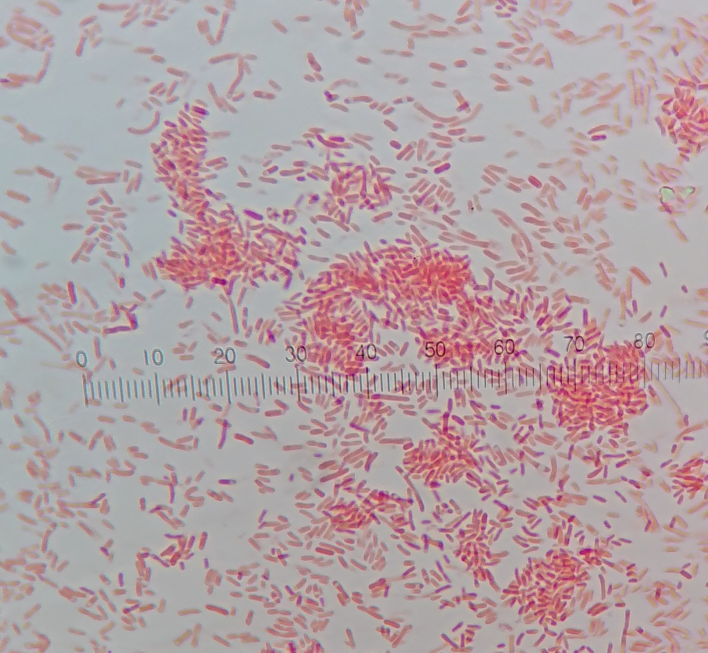

学生時代
| 卒業大学 | 東京工科大学・応用生物学部・応用生物学科 |
|---|---|
| 得意科目 | 遺伝子工学、分子生物学 |
| 苦手科目 | 英語 |
| 専攻分野 | バイオインフォマティクス |
| 特に頑張ったこと | 学生実験 |
|
メチルオレンジによるpH 溶液の色の変化 |
ミトコンドリアの観察結果 |
SDS-PAGE結果 |
|
アガロースゲル電気泳動結果 |
 大腸菌グラム染色結果 |
 納豆金グラム染色結果 |